A STUDY IN PLAIN LANGUAGE · AS OF 23 OCTOBER 2026
In January 2015 a blog called Wait But Why told millions of people that machines would soon be smarter than us. This page checks, claim by claim, what came true, what did not, and what is still open.
The article was right about the direction and wrong about the way we got here. AI sped up, chips kept improving, money poured in, and the risk debate went mainstream. But AI did not come from copying the brain. It came from huge networks that learn from text, and it turned out uneven rather than smooth.
Out of 23 claims, 5 held up, 7 partly held up, 5 were missed, 5 are not yet decided and 1 cannot be scored. The biggest claims, when human-level AI arrives and how fast it then races ahead, cannot be tested yet.
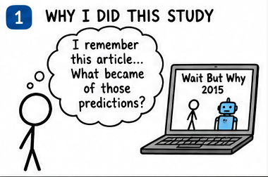
This study did not start with a news story or a new data set. It started with a memory: the two long posts by Tim Urban, Part 1 and Part 2, and the question "what became of those predictions?"
The 2015 posts are not original research. Urban explains ideas from Ray Kurzweil, Nick Bostrom and a few surveys. So judging the posts also judges those sources.
Held up it came true or is on track. Partly some of it did. Missed it did not happen the way it said. Not yet decided the date has not arrived, or the evidence cannot settle it. Can't be scored no test could prove it wrong.
The verdicts are one writer's judgement. Someone else could move a row. Every row names its evidence.
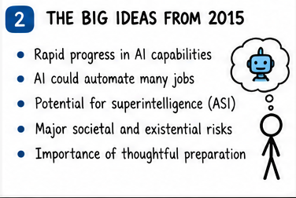
The article made a simple argument. Technology does not improve in a straight line. It speeds up. So the next 30 years could bring more change than the last 300. At the end of that road it saw two possible places: a machine as smart as a person, and then one far smarter.
The article also borrowed three roads to human-level AI: copy a brain, make AI evolve, or build an AI that improves itself. It said experts gave a 50% chance of human-level AI by about 2040. That number comes from a 2013 survey that Bostrom reports in his book Superintelligence.
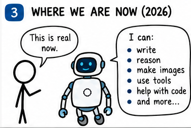
In 2015 most AI could do one thing at a time. In 2026 one system can write, translate, read pictures, write code and use software. That is a big change, and the article did not describe how it would happen.
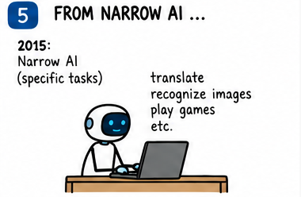
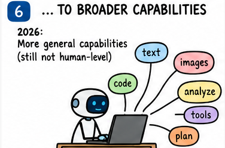
Source: Stanford AI Index 2026 chart captions. Panel 4 of the first picture set showed 12% for 2024; the Stanford caption I could read says about 5%, so this chart uses 5% and replaces that panel.
The test above asks AI to do real tasks on a computer, like opening files and filling forms. In one year it went from a small fraction to two-thirds. It is still a little below people.
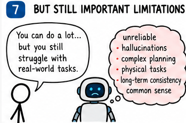
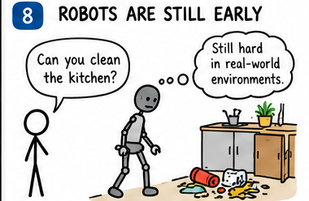
The best systems can win a maths contest and then fail at something a child finds easy. Experts call this jagged intelligence (see the International AI Safety Report). The 2015 article pictured one smooth staircase. The real thing looks like a mountain range.
A 2025 study by METR found that experienced programmers were slower with AI tools on their own projects, even though they felt faster. A test score and real work are different things.
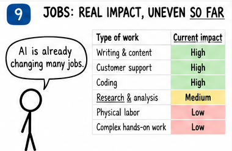
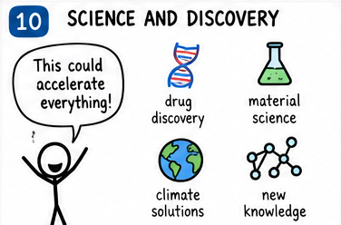
The drawings show a common view: writing, support and coding are changing fast; physical work is changing slowly. We did not find a source in this study that measures job effects, so please read panel 9 as a sketch, not a result. The expert panel LEAP does ask about jobs: its experts expect only 2% white-collar job growth from 2025 to 2030, against a 6.8% trend.
On science, Dario Amodei, head of Anthropic, argues in Machines of Loving Grace that AI could squeeze 50 to 100 years of biology into 5 to 10. He says it could be "as early as 2026" and also that "everything I'm saying could very easily be wrong". It is late October 2026 and nothing I found shows that level has been reached.
This is the number everyone remembers. Experts in a 2013 survey gave 10% by 2022, 50% by 2040 and 90% by 2075 (Bostrom's book, Table 2). The 2022 mark passed without human-level AI, which the survey allowed for.
Different people, questions and definitions. Sources: Bostrom 2014 (Table 2), Our World in Data, AI Impacts, Kurzweil's 2026 talk. a person or forecasting communitya researcher surveytoday
Years from the survey date to the median year. Sources as above. Different groups were asked each time, so read the trend, not the decimals.
Verdict: Not yet decided. Nobody who said 2040 has been shown wrong. Nobody who said 2100 has, either.
Here are 21 claims from the article plus two from Bostrom's book, which it relied on, what happened, and how I grade each. Each row links to the evidence.
The grades are the author's judgement.
| # | What the 2015 article claimed | What happened by October 2026 | Verdict | Evidence |
|---|---|---|---|---|
| 1 | Progress in AI keeps speeding up. | AI went from simple tools to systems that write code, pass exams and do olympiad-level maths. | Held up | METR, AI Safety Report |
| 2 | Chips keep getting twice as good about every 2 years (Moore's law). | Measured: about +37% a year for AI chips, a doubling every 2.2 years. | Held up | Epoch AI |
| 3 | A $1,000 computer will match the brain's raw speed (about 10^16 operations a second) by about 2025. | The article's own numbers need 1000x in ten years, but doubling every 2 years gives only 32x. Cheap hardware is still about 10 to 100 times short, depending on how you count. | Partly | Epoch AI, Part 1 |
| 4 | AI will move into everyday life. | It did: assistants, translation, search, photo and code tools. Generative AI reached 53% adoption in three years. | Held up | Stanford AI Index, AI Safety Report |
| 5 | Driverless cars are coming. | Waymo says about half a million paid rides a week in around ten US cities. Not everywhere, and not in ordinary cars. | Partly | Waymo (company figures) |
| 6 | What is hard for people is easy for machines, and the other way round. | Robots still struggle in real kitchens, but writing and coding fell first. | Partly | AI Safety Report |
| 7 | Three roads lead to human-level AI: copy the brain, simulate evolution, or AI that improves itself. | The road that worked was none of these: huge neural networks trained on text, then tuned with human feedback. | Missed | Part 1, Aschenbrenner |
| 8 | Experts give a 50% chance of human-level AI by about 2040. | Later surveys say 2047 to 2061. Forecasters and Kurzweil say sooner. The date has not come. | Not yet decided | AI Impacts, Our World in Data, Metaculus |
| 9 | 90% chance of human-level AI by about 2075. | Nothing so far proves or disproves it. | Not yet decided | AI Impacts |
| 10 | After human level, superintelligence follows fast. | Nothing is clearly at human level on everything, so nobody can test this yet. | Not yet decided | AI 2027, METR |
| 11 | Human level is not a special station: the gap between a 'dim' and a 'genius' person is tiny on the big scale. | AI is superhuman at some things and weak at others, so there is no single staircase. | Partly | AI Safety Report |
| 12 | Kurzweil's bet: a machine passes a hard Turing test by 2029 (the article says 2030). | A 2025 study found a chatbot was picked as the human more often than real people in a short test. The strict bet is not settled. | Partly | Long Bets, Jones and Bergen |
| 13 | Copy a whole brain by about the 2040s. | We have mapped a fruit fly (about 139,000 neurons). A mouse is about 500 times bigger, a human about 600,000 times. | Not yet decided | FlyWire |
| 14 | Nanobots and molecular assemblers within decades. | None exist. The field renamed itself and moved slowly. | Missed | Drexler (home page only) |
| 15 | Radical life extension: 'longevity escape velocity' around 2029 to 2032. | No sign yet. Kurzweil still says about 2032; critics say there is no data. | Not yet decided | Kurzweil, Geneva 2026 |
| 16 | The outcome is 'immortality or extinction', nothing in between. | Neither has happened, and the either-or is exactly what people argue about. | Can't be scored | Part 2, Narayanan and Kapoor |
| 17 | Companies and countries will race, and speed will beat safety. | They are openly racing. Safety work happens alongside. | Held up | AI Safety Report |
| 18 | Safety research is small and neglected. | Still small next to what is spent on making AI stronger, but now a funded field with institutes and an international report. | Partly | AI Safety Report, CAIS statement |
| 19 | Money will pour into AI. | Training compute grows about 4.5 times a year. US private AI investment was about $285.9 billion in 2025. | Held up | Epoch AI, Stanford AI Index |
| 20 | Intelligence is one dial that turns up steadily. | Real systems are 'jagged': brilliant at one task, bad at a nearby one. | Missed | AI Safety Report |
| 21 | (Blind spot) The article did not see chatbots built on text as the main road. | Conversational language models were the big story of 2022 to 2026. | Missed | Part 1 |
| 22 | (From Bostrom) Go programs might beat the world champion in about ten years. | AlphaGo beat Lee Sedol in March 2016, two to four years after the book's data. | Missed | Bostrom 2014, DeepMind |
| 23 | (From Bostrom) Understanding language is 'AI-complete': solve it and you are close to general AI. | Language models are fluent, yet still below humans on long computer tasks (66.3% against 72.35%). | Partly | Bostrom 2014, Stanford AI Index |
The pattern: the article was strong on direction (speed-up, money, the race) and weak on mechanism (how AI was built, what intelligence looks like), and on physical-world promises (nanobots, living forever). The most important claims, timelines and fast take-off, are still open.
The article says a $1,000 computer should match a human brain's raw speed by about 2025. It also says chips double every two years. Those two statements do not agree. Going from the article's starting point to the brain's speed in ten years needs a 1000-fold gain, which means doubling about every year. Doubling every two years gives 32-fold.
The first three are performance per dollar; the last is total compute used by the largest AI training runs, which is not the same thing. Multiples are my arithmetic on rates from Epoch AI and the article. Every step to the right is ten times more.
So the "chips double every two years" claim held, and the "$1,000 brain" claim arrived late. What the article missed is that the big gains came from spending: bigger computer farms and longer training, paid for with billions. Kurzweil's 2026 talk claims a doubling every 12 to 16 months for his own long-run measure; Epoch's AI-chip data show about 2.2 years. They measure different things, so I treat his number as his claim.
Fly count from FlyWire; mouse and human are rough textbook figures. The human brain has about 600,000 times more neurons than the fly.
One of the article's three roads was to copy a brain. The only brain mapped completely is a fruit fly's. And a wiring map is not a working copy. The road that actually led to today's chatbots skipped brain science entirely, much as aeroplanes do not flap their wings.
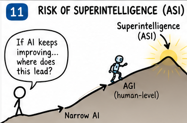
The article's boldest idea is the intelligence explosion: an AI that can improve itself gets better faster each round. Nothing is at human level on everything, so nobody can test that yet. What we can measure is nearby: how long a task can AI finish?
Days for the task length (at 50% success, on software tasks) to double. Figures from METR via my earlier research. It measures software tasks only, not general intelligence.
That is the kind of speed-up Kurzweil describes. Keep going at the recent pace and ten more doublings means about a thousand times longer tasks. But it is one narrow measure.
Fast-take-off supporters say AI is already helping build AI. Sceptics say slow adoption, rules and the physical world will hold things back; see AI as Normal Technology. The authors of AI 2027 have also said they lengthened their own timelines (I could not find the page for that, see "Sources we could not pin down").
Part 2 of the article is the scary one. It showed two camps: the confident corner (Kurzweil, mostly optimistic) and the anxious corner (Bostrom and others). Urban sided with the anxious corner.
The worried view: If Anyone Builds It, Everyone Dies. The sceptical view: AI as Normal Technology.
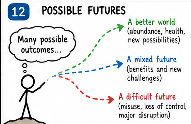
We cannot put words in people's mouths. The first picture set had two panels with invented quotes for Kurzweil and Urban. We left them out and show what each person has said in a source.
Ray Kurzweil · Geneva, September 2026
Video (used a supplied transcript).
Tim Urban · interview of April 2022
Tedium interview (December 2022).
| Essay | Year | View | In one line |
|---|---|---|---|
| Vinge, The Coming Technological Singularity | 1993 | Singularity | Superhuman AI within about 30 years ends the human era. |
| Bostrom, Superintelligence | 2014 | Risk | Keeping control of a smarter machine is hard. |
| Amodei, Machines of Loving Grace | 2024 | Optimist (industry) | Powerful AI could squeeze a century of biology into a decade. |
| Aschenbrenner, Situational Awareness | 2024 | Speed and security | AGI by about 2027, and a national-security race. |
| AI 2027 | 2025 | Scenario | A month-by-month story to superhuman AI. |
| Altman, The Gentle Singularity | 2025 | Optimist (industry) | We are past the point of no return, and it is gradual. |
| Narayanan and Kapoor, AI as Normal Technology | 2025 | Sceptic | AI spreads slowly, like electricity. |
| Yudkowsky and Soares, If Anyone Builds It, Everyone Dies | 2025 | Doom | Building superintelligence leads to extinction. |
| International AI Safety Report | 2026 | Expert review | Fast, uneven progress; risks documented, many questions open. |
In 2015 the question was whether to take this seriously. Now the essays argue about dates, numbers and blame. A confident date is the easiest claim to score, and the most likely to be wrong.
What it did well, by being early: it took the risk seriously when most coverage did not, and it explained a hard topic to a general reader. That is why it deserves a check.
I will not give a date for superintelligence. This whole study shows why. Here are three futures and what would tell us which one we are in.
Spending, efficiency and AI that builds AI keep compounding. By the early 2030s AI does most remote thinking jobs.
Watch: task length reaching weeks; labs saying AI does most of their research.
Limits in data, power or reliability slow things down. The story becomes adoption and rules over decades.
Watch: task-length doubling taking longer; spending outrunning results.
AI becomes far better than people at lots of things yet stays weak at a few that matter. Big social effects come well before any single "superintelligence". This is my best guess, held loosely.
Watch: the gap between test scores and real work.
The most important thing to watch is whether AI starts to seriously speed up its own development. That is the article's core idea, and unlike most of it, it can be observed.
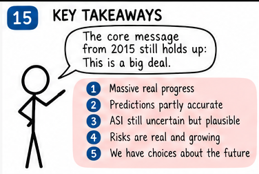
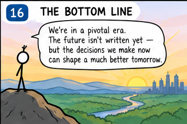
Every source used is listed with a link. The tag after each says how much of it I read. If a source is unclear, I say so.
This list may not be complete. Some sources may be missing, or a link may point to a home page rather than the exact page. If you think a mention or a link is missing, or something is wrong, please say so. Sources can be added, and the page will be corrected. Found a missing or wrong source? Tell me through the feedback form and I'll correct it.
The pictures were made with an AI image generator. Text inside AI-made pictures can contain mistakes. We retouched panel 3 (removed a company logo), replaced panel 4 with a chart built from the Stanford figures, and left out panels 13 and 14 because they put invented words in the mouths of real people.
Part 1. The starting point.
Part 2. Risk and the two camps.
Source of the 2013 survey (10% by 2022, 50% by 2040, 90% by 2075), the Go forecast and the AI-complete idea. I read chapter 1 in the PDF supplied; the link goes to the publisher's page.
His 2026 claims. I used a transcript that was supplied; parts of its numbers are garbled.
Book and his site. Only the site's home page is linked.
'Powerful AI' definition, 'as early as 2026', and the 'Taking stock' section.
AGI about 2027 by extending compute trends.
A dated scenario for superhuman AI.
An optimistic essay from a company boss.
The sceptical view: AI spreads slowly, like electricity.
The most worried view.
An early ancestor of the idea.
A critic's view on reliability. From the supplied list.
OSWorld 5% (2024) to 66.3% (2025) against a 72.35% human baseline; 53% adoption in three years; 362 AI incidents; US investment about $285.9 billion. I could only read the chart captions on this page.
From the supplied list.
From the supplied list.
Survey results, Metaculus 2058 to 2040 in 2022, how the question's wording changes the answer. Its data end in 2022.
339 experts, 60 superforecasters, about 1,400 members of the public. I read the first 100,000 of about 110,000 characters.
Survey archive. Medians of 2047 to 2061 come from my earlier research and I did not re-open the archive for this version.
A live forecast. I did not record a current value, so check the page.
AI chip price-performance (+37% a year) and training compute (about 4.5 times a year). Figures come from my earlier research and I did not re-open the page.
How long a task AI can finish: doubling every 130.8 days (recent) or about 212 days (2019 to 2024). Figures from earlier research.
Found developers were slower with AI tools, though they felt faster.
Jagged abilities and the state of risk evidence. Home page only.
139,255 neurons. Mouse (about 70 million) and human (about 86 billion) counts are rough textbook figures.
About 500,000 paid rides a week, in about 10 to 11 US cities. Company figure reported in news; no exact page confirmed.
From the supplied list.
His only recent public view I could find: worried and hopeful; 'in 2060, we will be happier'.
From the supplied list.
From the supplied list.
From the supplied list.
The bet. Still open.
A short three-party test, not the strict bet. Link from my earlier research.
One-sentence statement about extinction risk.
AlphaGo's 2016 win over Lee Sedol.
On atomically precise manufacturing. Home page only.
Widely reported rule; not opened.
Widely reported summit; not opened.
These statements are in the study, but I could not attach a clean link. Treat them with extra care.